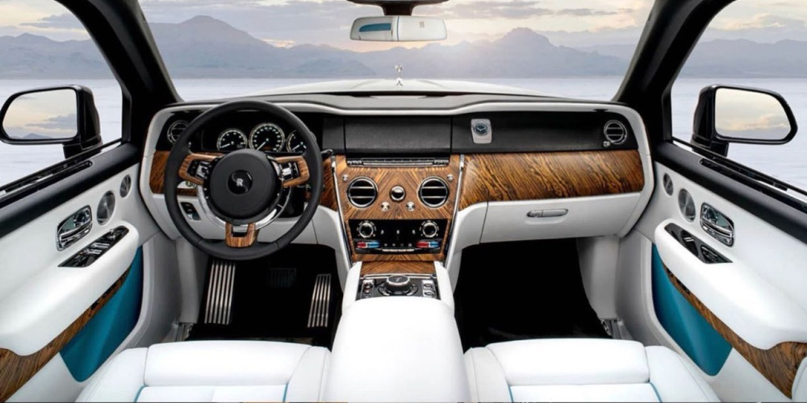
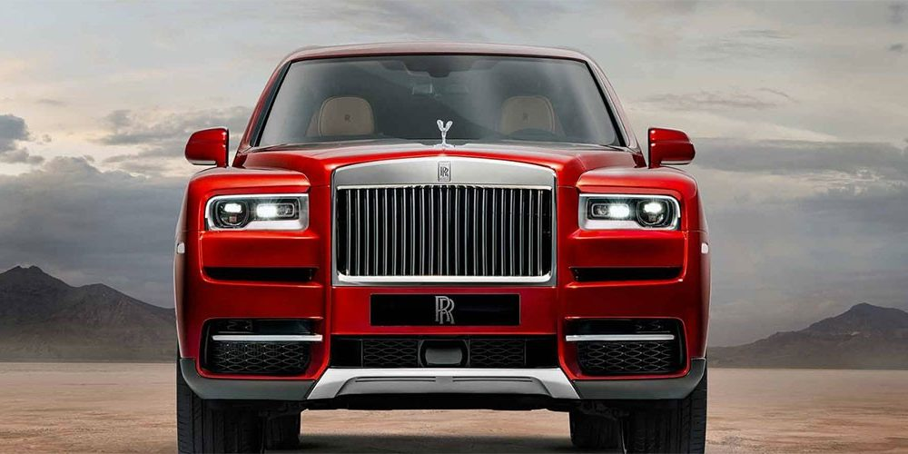
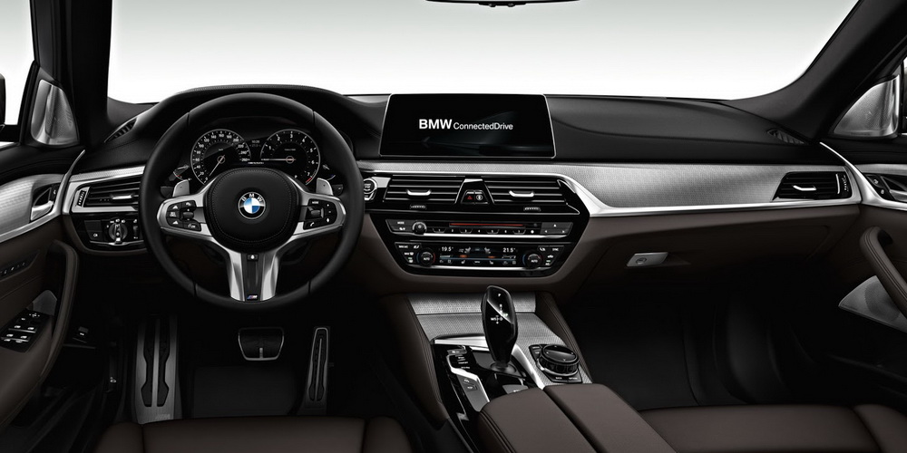
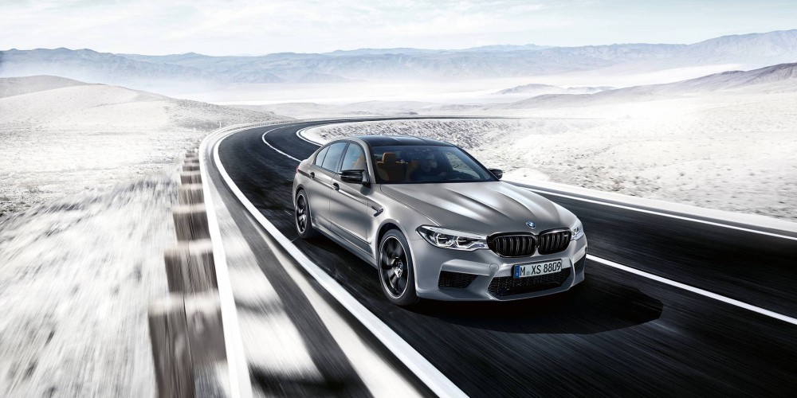
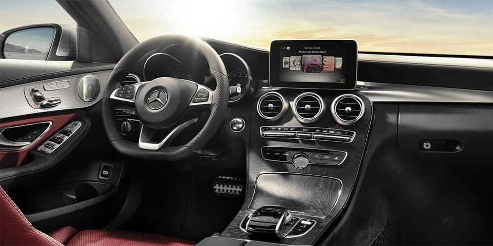
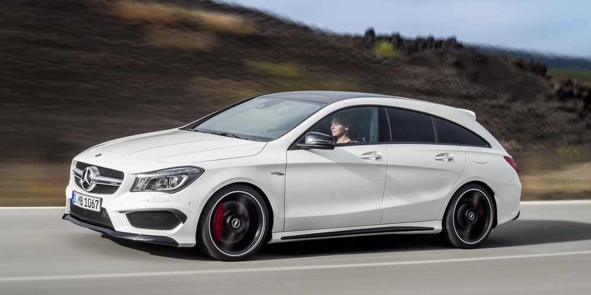

Najnoviji je i odmah postaje kralj SUV modela - Rolls Royce Cullinan. Veći je od Bentlijevog modela Bentayga, a sa svojim karakterističnim luksuzom nema konkurenciju Nekrunisani kralj SUV modela je pred vama – ovo je prvi “terenac” kompanije Rolls Royce, Cullinan. Konstruisan je na mehaničkoj platformi Phantoma, koja je potpuno nova i većinom napravljena od aluminijuma.
Pod haubom je V12 motor sa 571 konjskom snagom, koji ogroman maksimalni obrtni moment od 850 Nm postiže pri svega 1600 obrtaja.
Performanse nisu objavljene, baš kao ni ubrzanje od nula do 100 na sat. Verujemo da bez problema dostiže 250 km/h. Rolls Royce Cullinan je konstruisan da bude ultra-sofisticirano vozilo, sa osećajem kao da ste na letećem ćilimu.Od konkurenta Bently Bentayga je duži za 200 milimetara, širi i ima duže međuosovinsko rastojanje…
BMW M5 je prava zver u obliku limuzine, koja bez pogona na sva četiri točka ne bi mogla tako lako da prenese svih 600 “konja” na podlogu, ali BMW ne bi bio to što jeste da nije ambicioznih ideja i inženjera, koji su odlučili da stvore još ekstremniju verziju najbrže “petice”.
Reč je o BMW M5 Competition, koji ima ne samo pojačan motor već i mnoge druge modifikacije, sa kojima je bliži trkačkom automobilu nego udobnoj limuzini. V8 motor zapremine 4,4 litre sada isporučuje 625 konjskih snaga, što je povećanje od 25 KS, dok je maksimalni obrtni moment od 750 njutn-metara ostao nepromenjen.
Zahvaljujući dodatnoj snazi, M5 Competition do “stotke” ubrzava za neverovatne 3,3 sekunde, a iz stanja mirovanja do 200 km/h mu je potrebno samo 10,8 sekundi. U odnosu na standardni M5, poboljšanja su 0,1, odnosno 0,3 sekundi. Kao i kod standardnog M5, Competition ima pogon na sva četiri točka, osmostepeni automatski menjač i aktivni M diferencijal.
Nakon više meseci iščekivanja, tokom kojih nas je Mercedes “zadirkivao” fotografijama enterijera, nemački automobilski gigant je i zvanično skinuo veo sa potpuno nove, četvrte generacije A-klase, čijem smo predstavljanju večeras prisustvovali
Kada smo već kod enterijera, treba spomenuti i to da je Mercedes novu A-klasu opremio i potpuno novim multimedijalnim sistemom MBUX (Mercedes-Benz User Experience), koji se sastoji od dva digitalna displeja, dijagonale od po 7 inča u osnovnoj verziji, odnosno od po 10,25 inča u višim paketima opreme, koji vozaču nude gotovo sve informacije, bilo da je reč o osnovnoj instrumentaciji ili multimedijalnom sadržaju.
Tu je i novi 1,4-litarski četvorocilindarski benzinski motor, interne oznake M 282, od 163 KS i 250 Nm, kombinovan sa 7-stepenom 7G-DCT transmisijom sa dvostrukim kvačilom. Nov je i 2,0-litarski turbo benzinac od 225 konjskih snaga i 350 Nm obrtnog momenta, interne oznake M 260, koji zajedno sa pomenutim M 282 menja postojeće 1,6-litarske i dvolitarske motore iz M 270 serije.